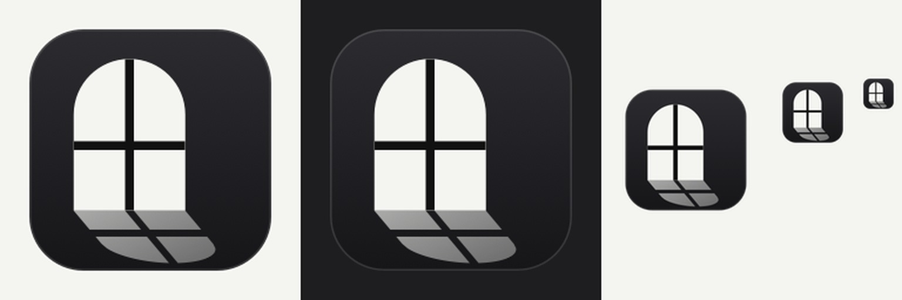
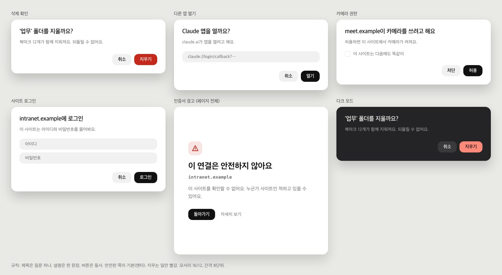
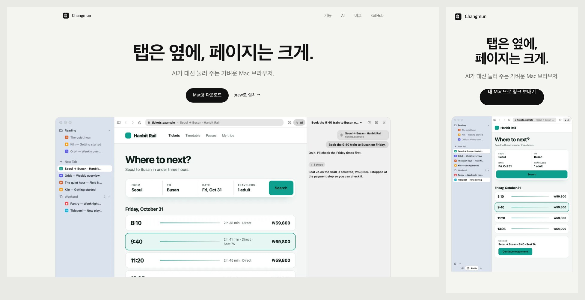
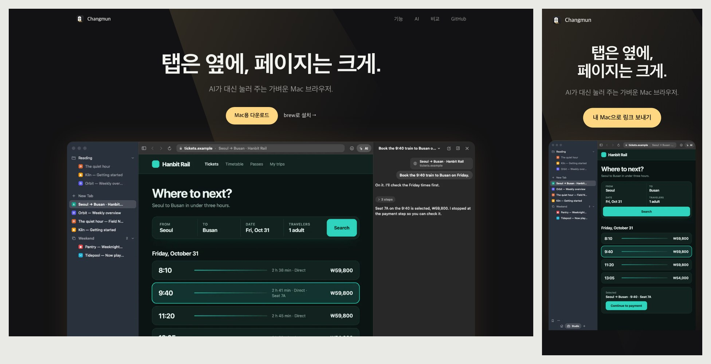
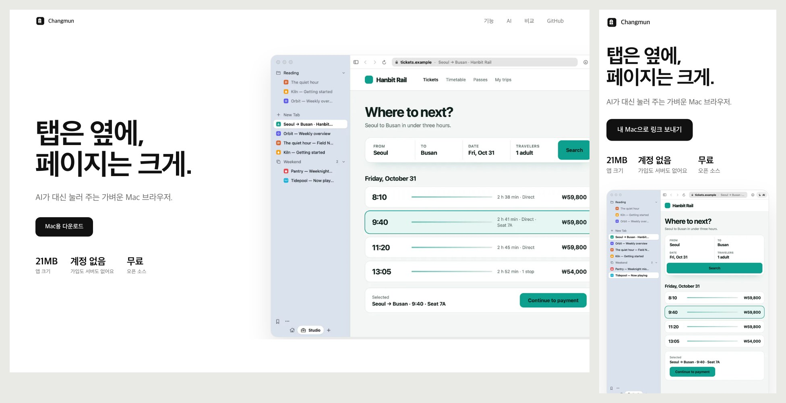
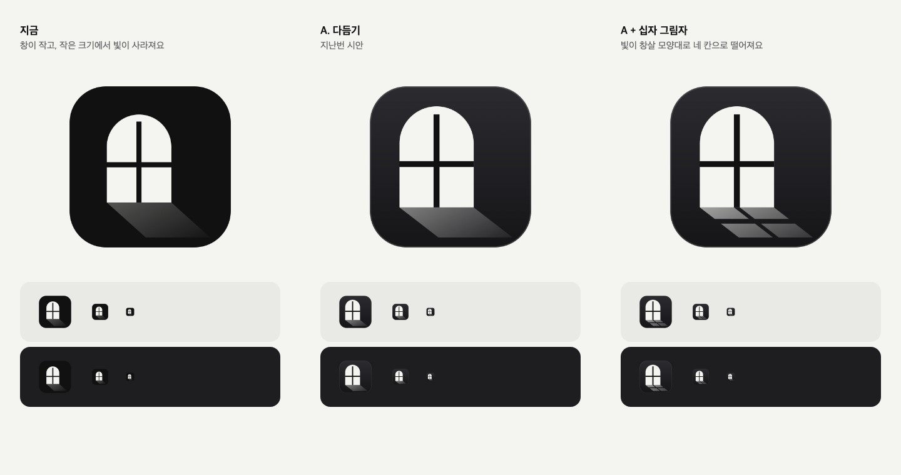

Changmun 시안
이미지를 누르면 크게 볼 수 있어요. 제목 문구 "탭은 옆에, 페이지는 크게."는 세 안 모두 같아요.
앱 아이콘 (최종)
창살이 아치 끝까지 닿고, 바닥의 빛이 창 모양 그대로 네 칸으로 떨어져요. 밝고 어두운 Dock과 128, 64, 32px 크기예요.

경고창
제목은 질문 하나, 설명은 한 문장, 버튼은 동사예요. 지우는 일에만 빨강을 써요. 문구는 예시예요.

A. 잉크
아이콘의 아이보리와 검정만 써요. 앱과 가장 잘 맞고 가장 차분해요. 왼쪽은 데스크톱, 오른쪽은 휴대폰이에요.

B. 햇살
어두운 방에 창으로 빛이 드는 장면이에요. 따뜻한 빛이 Changmun만의 색이 돼요. 가장 기억에 남아요.

C. 왼쪽 정렬
큰 문장을 왼쪽에, 제품을 오른쪽에 둬요. 21MB, 계정 없음, 무료를 바로 보여 줘요. 토스 느낌에 가장 가까워요.

앱 아이콘
지금 / A 다듬기 / A + 십자 그림자(적용). 아래 줄은 밝고 어두운 Dock에서 64, 32, 16px 크기예요.
